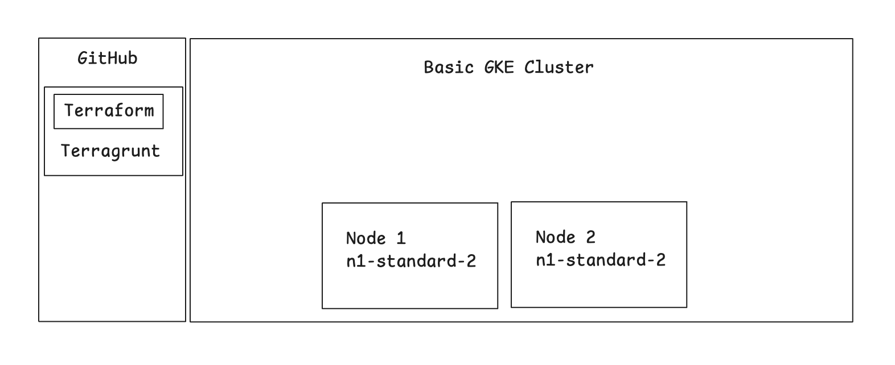
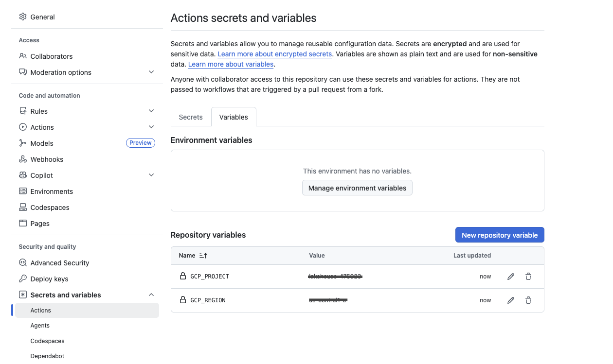
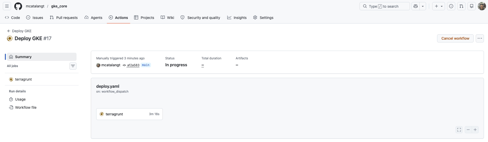
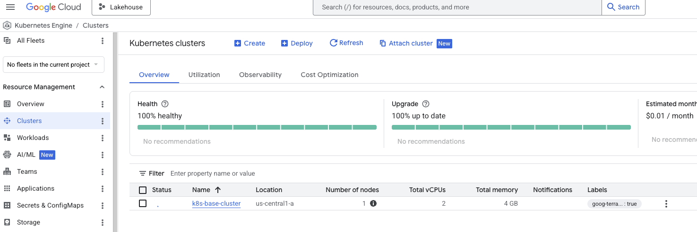
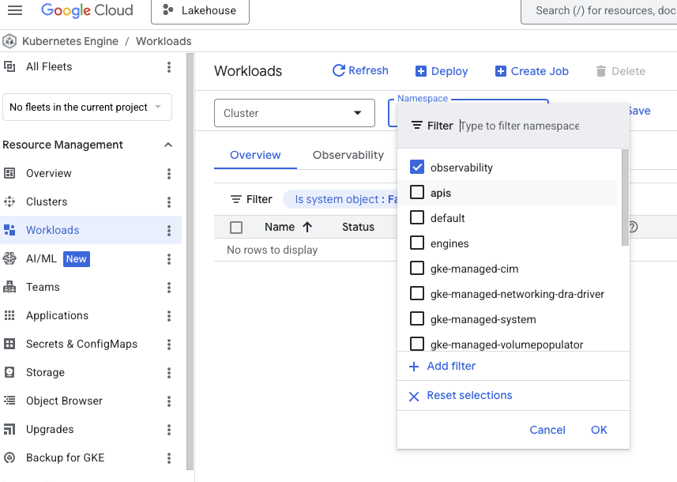
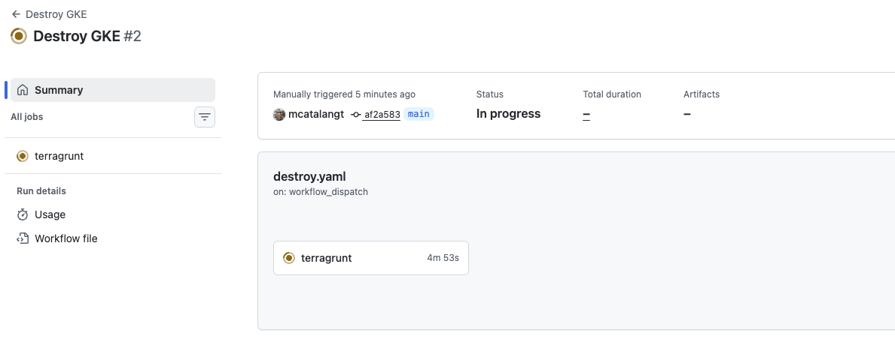

Infraestructura como Código (IaC)¶
Esta sección centralizo plantillas de Terraform diseñadas para la creacion de recursos de infraestructura segura en Google Cloud, asi como en On-Prem usando Ansible, también github actions y github packages para la orquestación de flujos de trabajo.
1. Implementación de infraestructura en la nube¶
Acceso al Código¶
El código fuente completo se encuentra en el repositorio iac_gke, y se ha optado por estructurar el repositorio de manera modular con Terragrunt para permitir la reutilización en diferentes entornos (Dev, Staging, Prod).
Especificaciones Técnicas¶
| Tipo | Provider | Nodos | Tipo de nodo | Specs | Memoria RAM |
|---|---|---|---|---|---|
| Dev GKE | GCP | 2 | e2-medium | 2 vCPU | 4 GB |
| Stage GKE | GCP | 2 | n1-standard-2 | 2 vCPU | 7.5 GB |
| Prod GKE | GCP | 3 | e2-standard-2 | 2 vCPU | 8 GB |
2. On-Prem Infrastructure Deployment¶
Kubespray¶
Es una herramienta de código abierto (perteneciente al proyecto oficial de Kubernetes SIGs) diseñada para automatizar el despliegue, la configuración y el mantenimiento de clústeres de Kubernetes listos para producción.
3. Stack (Los ingredientes)¶
Herramientas
- Cloud: Google Cloud Platform (GCP) [GKE, Compute Engine]
- Herramienta: Terraform v1.5+, Terragrunt, Ansible, GitHub Actions, Github Package
- Seguridad: IAM Least Privilege, VPC Service Controls
4. Arquitectura¶
El código está modularizado para permitir la reutilización en diferentes entornos (Dev, Staging, Prod) en Cloud y On-Prem.
Estructura del repositorio:¶
Estoy usando el patrón de diseño DRY (Don't Repeat Yourself) de Terragrunt, el cual separa la configuración global de la configuración específica de cada módulo.
📦 iac_core --- Repositorio Base
┣ 📂 .github
┃ ┗ 📂 workflows
┃ ┣ 📜 deploy.yaml --- Workflow para despliegue de infraestructura
┃ ┗ 📜 destroy.yaml --- Workflow para destrucción de infraestructura
┣ 📂 live
┃ ┣ 📂 desarrollo
┃ ┃ ┣ 📂 gke-base
┃ ┃ ┃ ┗ 📜 terragrunt.hcl --- Configuración terragrunt para el clúster base
┃ ┃ ┗ 📂 gke-resources
┃ ┃ ┗ 📜 terragrunt.hcl --- Configuración terragrunt para recursos internos (namespaces, etc)
┃ ┗ 📜 terragrunt.hcl --- Configuración terragrunt global ROOT (Estado y Providers)
┣ 📂 modules
┃ ┗ 📂 gke-base
┃ ┗ 📜 main.tf --- Módulo terraform para despliegue de infraestructura
┃ ┗ 📜 outputs.tf --- Outputs del módulo
┃ ┗ 📜 variables.tf --- Variables del módulo
┃ ┗ 📂 gke-resources
┃ ┗ 📜 main.tf --- Módulo terraform para despliegue de recursos
┃ ┗ 📜 outputs.tf --- Outputs del módulo
┃ ┗ 📜 variables.tf --- Variables del módulo
┗ 📜 README.md --- README del repositorio
Diagrama de la arquitectura:¶

5. Paso a Paso¶
1. Descargar el codigo del repositorio¶
2. Crear 2 variables de entorno en GitHub¶
GCP_PROJECT: Coloca el id del proyecto en GCP (ej. platform-core-386722)GCP_REGION: Coloca el nombre de la region o zona en GCP (ej. us-central1)

3. Crear un Workload Identity Federation en GCP¶
Lo utilizaremos para autenticar a github actions con GCP sin usar llaves.
4. Implementación en GitHub Actions¶
Importante:
El bloque permissions es obligatorio para que GitHub pueda generar el token OIDC, y export_environment_variables: true es crucial para que herramientas como Terraform/Terragrunt puedan detectar el token temporal en los pasos posteriores.
Modifica el siguiente bloque en tu archivo .github/workflows/deploy.yml.
jobs:
deploy:
runs-on: ubuntu-latest
# Requisito obligatorio para solicitar el token OIDC
permissions:
contents: 'read'
id-token: 'write'
steps:
- name: 'Checkout Code'
uses: 'actions/checkout@v4'
- name: 'Autenticación con Workload Identity'
id: 'auth'
uses: 'google-github-actions/auth@v2'
with:
workload_identity_provider: 'projects/TU_PROJECT_NUMBER/locations/global/workloadIdentityPools/github-actions-pool/providers/github-provider'
service_account: 'tu-service-account@tu-id-de-proyecto.iam.gserviceaccount.com'
export_environment_variables: true
- name: 'Ejecutar despliegue (Ej. Terraform/Terragrunt)'
run: 'terragrunt apply -auto-approve'
5. Despliegue de infraestructura¶
Puedes ejecutar el codigo desde GitHub Actions o desde tu maquina local con git push
6. Validación E2E¶
Ejecución del Deploy en GitHub Actions¶

Overview de GKE¶

Overview de GKE Resources¶

Ejecución del Destroy en GitHub Actions¶

7. Otros Módulos Incluidos¶
| Módulo | Descripción | Estado | Repositorio |
|---|---|---|---|
01-iac-postgresql |
Creación de BD PostgreSQL HA. | ✅ Stable | GitHub |
02-iac-mysql |
Creación de BD MySQL HA. | ✅ Stable | GitHub |
03-iac-mongodb |
Creación de BD MongoDB HA. | ✅ Stable | GitHub |
04-iac-neo4j |
Creación de BD Neo4J HA. | ✅ Stable | GitHub |
05-iac-prefect |
Creación de Workflow Prefect, orquestador y automatizador de flujos de trabajo | 🚧 Beta | GitHub |
06-iac-event-driven |
Creación de event driven (PubSub, Kafka, RabbitMQ) para gestión de mensajes y desacoplamiento de sistemas | 🚧 Beta | GitHub |
07-iac-kubernetes |
Creación de Kubernetes en GKE, Orquestador de Contenedores en 5 minutos | ✅ Stable | GitHub |
08-iac-observability |
Creación de Grafana Stack en GKE para Observabilidad de sistemas transacionales E2E (Logs, Trazas, Metricas y Perfiles) | 🚧 Beta | GitHub |